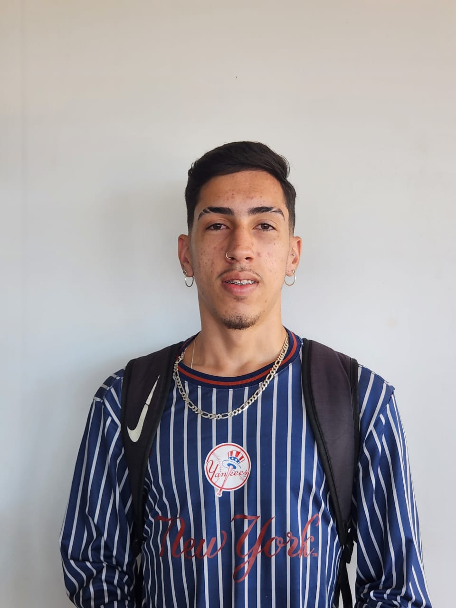
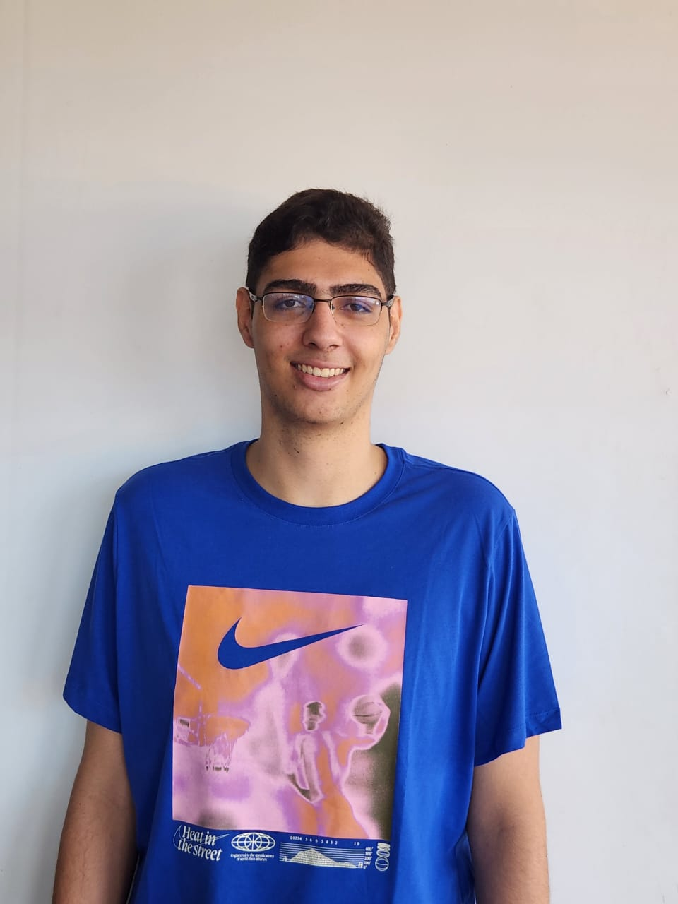

SIGNACLE Documentando
conteúdos acessíveis em Libras.
E se a gente pudesse ter uma nuvem com vários conteúdos acessíveis em Libras?! Vídeos com vários sinais traduzindo palavras dos mais variados contextos?! Essa é a proposta do repositório signacle: um ambiente online armazenando conteúdos em Libras sobre vários temas para auxiliar na aprendizagem visual de surdos e ouvintes usuários de língua de sinais.
LINGUAGENS DE PROGRAMAÇÃO

HTML
HTML é a linguagem fundamental para estruturar o conteúdo das páginas web, permitindo aos desenvolvedores definir textos, imagens e links para visualização nos navegadores, facilitando a criação de documentos acessíveis e interativos.

CSS
CSS é uma linguagem de estilo que trabalha em conjunto com HTML para controlar a apresentação e o layout das páginas da web, permitindo aos desenvolvedores criar estilos consistentes e atraentes para uma experiência visualmente agradável.

JavaScript
JavaScript é fundamental para páginas web, permitindo interatividade dinâmica como animações e validação de formulários, melhorando a experiência do usuário e sendo uma ferramenta indispensável no desenvolvimento web moderno.

PYTHON
Python é valorizado por sua simplicidade, legibilidade e versatilidade, sendo amplamente utilizado em desenvolvimento web, científico e automação, graças à sua vasta biblioteca de módulos e frameworks.

JAVA
Java é uma linguagem versátil e segura, amplamente usada em diversos tipos de aplicativos devido à sua portabilidade. Sua robustez e desempenho a tornam uma escolha confiável para sistemas escaláveis e versáteis.

C++
C++ é uma linguagem de programação conhecida por sua eficiência e controle de recursos, sendo amplamente utilizada em sistemas embarcados, jogos e software de baixo nível, onde a otimização é essencial.
Orientador:
professor Saulo Xavier
integrantes:
Tailan Correia
Yan Lopes
Ruan
Arthur Costa
Giulia Magalhães
MUITO PRAZER, SOMOS APRENDIZES DE LIBRAS E ESTUDANTES DE ADS.
Pra quem não sabe, ADS é o curso de Análise e Desenvolvimento de Sistemas. Como parte do currículo de nosso curso, temos Libras ofertada como disciplina optativa. Nosso professor? É o Prof. Dr. Saulo Xavier, mestre e doutor em Tradução pela UFSC, jornalista, professor, pesquisador e tradutor-intérprete de Libras. Nosso desafio? Pensar em uma solução online que pudesse oferecer um espaço de consulta de sinais em Libras referentes a conteúdos curriculares do curso de ADS para auxiliar a aprendizagem de estudantes surdos e ouvintes usuários de línguas de sinais
Como essa aventura começou?! Estávamos todos em nossa aula de Libras e, enquanto mergulhávamos na aprendizagem de sinais em Libras, uma ideia promissora surgiu: e se a gente criasse um site para funcionar como um grande banco de dados para auxiliar não apenas a gente enquanto alunos da disciplina, mas também, outros estudantes, especialmente nossos colegas surdos e ouvintes do curso de ADS da faculdade?! estávamos imersos na aprendizagem dos gestos e expressões que compõem essa linguagem única, surgiu uma ideia promissora: desenvolver um site para auxiliar não apenas nós, alunos da disciplina, mas também outros estudantes, especialmente aqueles do curso de Análise e Desenvolvimento de Sistemas (ADS) da faculdade.
Nossa inspiração veio quando percebemos que, embora estivéssemos aprendendo Libras de forma presencial, muitos recursos online poderiam complementar nosso aprendizado. Reconhecemos que a tecnologia pode desempenhar um papel fundamental na democratização do acesso à Libras, tornando essa língua mais acessível e prática para um público maior.
A partir dessa visão, começamos a esboçar os detalhes do que seria um aplicativo. De início, imaginamos uma plataforma intuitiva e fácil de usar, que oferecesse lições interativas, vídeos explicativos, quizzes para testar o conhecimento, um dicionário de sinais e até mesmo uma seção de prática, onde os usuários pudessem se comunicar em Libras com outras pessoas da comunidade. Porém, esse sonho inicial foi bem maior do que poderíamos imaginar em termos de volume de trabalho. Resultado?! Por questões de tempo e de competência técnica nossa enquanto estudantes, resolvemos mudar nossa ideia e direcionamos nossos esforços para construir um site e não mais um aplicativo.
Além disso, consideramos a importância de tornar o nosso agora site acessível para pessoas surdas, garantindo uma compatibilidade com o uso de tecnologias assistivas, como leitores de tela, vibrações para notificações e tradutores automáticos. Ao compartilharmos sobre essa ideia com nossos colegas do curso de ADS, recebemos um feedback positivo e logo formamos uma equipe dedicada ao desenvolvimento do projeto. Cada membro contribuiu com suas habilidades e conhecimentos técnicos, e juntos, transformamos nossa ideia em realidade.
A partir daí, nosso repositório virtual de Libras começou a ganhar forma, passando por várias interações de design, desenvolvimento web e testes. Nosso objetivo foi criar uma ferramenta que não apenas facilitasse o aprendizado de sinais da Libras, mas também, promovesse a inclusão e a igualdade de acesso à informação e diversos conteúdos.
Na medida em que o projeto avançava, recebíamos feedbacks valiosos de professores, colegas e especialistas em Libras, refinando e aprimorando ainda mais o nosso conteúdo. Assim, finalmente, lançamos nosso protótipo Signacle: um repositório virtual de conteúdos acessiveis em Libras voltado para um público de surdos e ouvintes sinalizadores.
Esperamos que o Signacle possa colaborar com ações que contribuam para que o ambiente virtual seja cada vez mais acessível para todos, independentemente de sua capacidade auditiva.